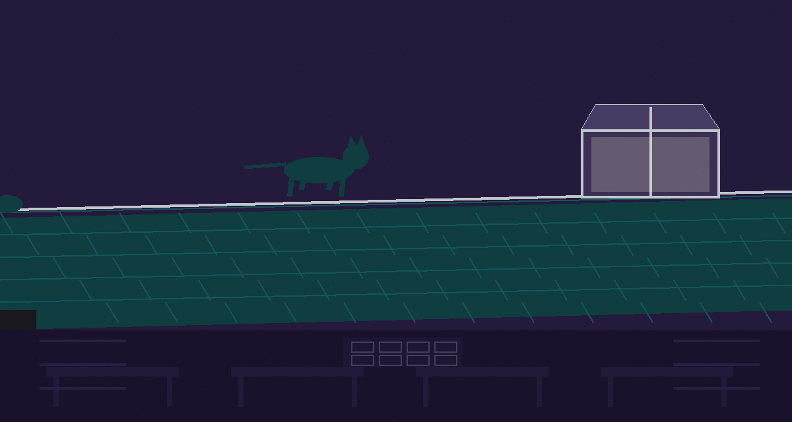
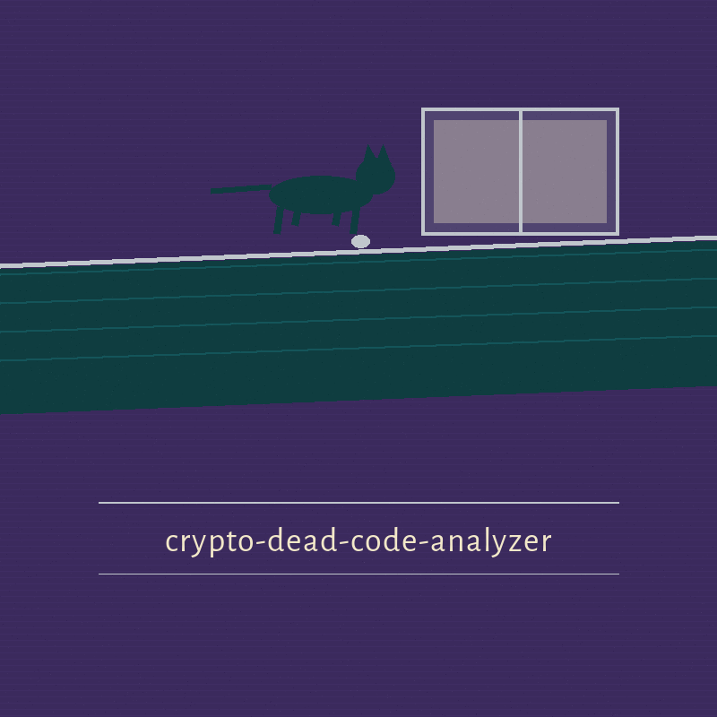

crypto-dead-code-analyzer: Cat Burglar of the Library Roof
Theme: Cat Burglar of the Library Roof. Headings in Big Shoulders Stencil Text SC, reading text in Alegreya Sans.

One File, Read as Text
The program reads one smart contract or Python source file as plain text and reports functions defined but never called or referenced elsewhere in that same file, alongside single mention checks for two named library calls. The scan counts name references only. It does not parse reachability beyond those references.
A Mention Is Not a Call
A name spoken inside a comment or a string counts as a reference. A name called only from outside the file is reported as though unused. Every finding is a prompt to look rather than a proof that code is dead. The two library call patterns are named here as patterns only, hashlib.sha256 and rsa.generate_private_key, each reported when it appears once or not at all beyond its single mention. No other library, call, or construct is examined.
Install, as Printed and Flagged
The install line stands in the preserved record below, inside a ledger note that flags the fault in place: the organisation is written without its hyphen. The line is not corrected on the page.
Two Running Lines
The README printed placeholder stands first in the preserved record: ./crypto-dead-code-analyzer [params]. It is marked as a placeholder the parser does not accept. Beside it stands the line the parser in main.py does accept: python3 main.py CONTRACT_FILE [-v] [-s], with CONTRACT_FILE restored from the parser and marked as restored, since it is the one argument without which no file is opened at all.
Defined Once, Spoken of Nowhere Else
The controls stand in README order in the preserved record, with the restored entry at the head: CONTRACT_FILE, restored, the path to the smart contract file, required. Then -h, which shows help and exits. Then -v, whose long form --verbose the README never prints, turning on verbose logging. Then -s, whose long form --simulate the README likewise never prints, running the simulation described next.
The Two Simulation Checks
The simulation is two whole file text checks and nothing more. The first warns when an equality comparison and a hash call both occur anywhere in the file, however far apart, under a heading about insecure comparison beside a hash. The second warns when a named insecure random call occurs, under a heading about insecure random number generation. Both findings are demonstrations the code itself calls deliberately simplified. Neither is a reachability result of any kind.
Findings Do Not Fail the Run
A missing input file exits 1. Any other reading failure exits 1. A file heavy with findings and a clean file alike finish with a normal exit, told apart only by their warning lines. The licence page prints the README line as it stands in the preserved record, flagged for the same missing hyphen as the install line, and sets beside it the separate fact that the repository LICENSE file carries the MIT License, leaving the two as they are found.
Record preserved from the README
# crypto-dead-code-analyzer
Analyzes smart contract and Python source text for potential dead code with a text level scan: it reports functions defined but never called or referenced elsewhere in the file, alongside single mention checks for two Python library calls. The scan counts name references only and does not parse reachability beyond name references. - Focused on Basic cryptographic operations
## Install
`git clone https://github.com/ShadowGuardAI/crypto-dead-code-analyzer`
## Usage
`./crypto-dead-code-analyzer [params]`
## Parameters
- `-h`: Show help message and exit
- `-v`: Enable verbose logging.
- `-s`: Simulate potential vulnerabilities.
## License
Copyright (c) ShadowGuardAI
Facts from the code, stated in the prose
This record names: hashlib.sha256, rsa.generate_private_key, CONTRACT_FILE, python3 main.py CONTRACT_FILE, --verbose, --simulate, git clone https://github.com/ShadowGuardAI/crypto-dead-code-analyzer, Copyright (c) ShadowGuardAI, ./crypto-dead-code-analyzer [params], MIT License, Count the Names in One File, One File, Read as Text, Name the Contract File, Run the Two Simulation Checks, Turn On Verbose Logging, Show Help, A Mention Is Not a Call, Defined Once, Spoken of Nowhere Else, Findings Do Not Fail the Run, insecure comparison, insecure random.